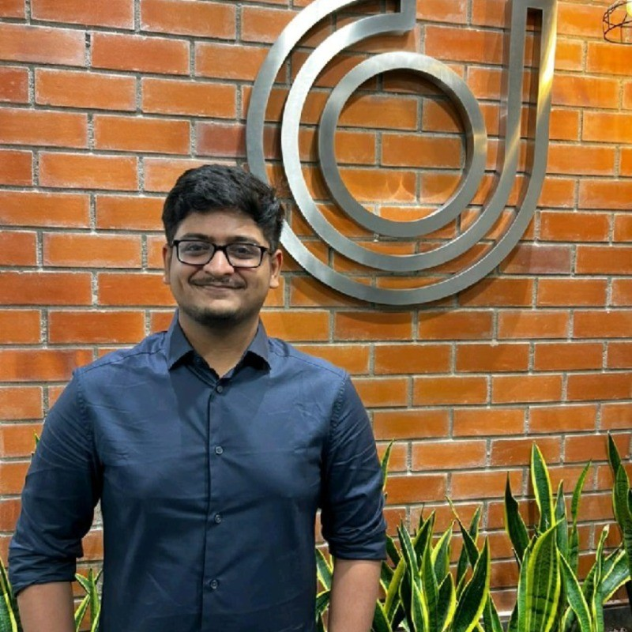

I help customers win in SaaS, Fintech, and product-led environments — bridging support, product, and engineering so the things that should ship, ship. Currently Account Specialist @ HighLevel, building the workflows other teams won't.
I started in customer support. Somewhere along the way I got tired of just answering the question, and started building the workflow that made the question stop coming back.

My career started in B2B manufacturing (Satibox), moved into B2C Fintech support at Juno — where I learned what it really means to own metrics like FRT, AHT, and CSAT under volume — and arrived at HighLevel in October 2023, an all-in-one CRM and marketing platform serving agencies. What's happened since is, in some ways, the more interesting part.
2024 — the catch-up year. I joined as a Customer Support Representative and spent the year doing something that doesn't show up on a resume: becoming a real user of the platform, not just a trained employee. I experimented, broke things, rebuilt them, joined the L1/L2 pilot, learned the affiliate side of the business, and started showing up in the Slack channels of clients I didn't technically own. None of that paid off in Q3. It paid off in Q1 of the next year.
2025 — the shift. I noticed I was spending less time troubleshooting and more time engineering solutions. JavaScript dashboards for clients whose use cases the product didn't fit. An A2P email-parser pipeline so high-volume agencies could see submission status in real time. A custom Voice AI synthesis workflow because the standard voicemail flow wasn't cutting it. A LeadConnector Q&A bot. A standardized A2P submission process that took volume agencies from a ~20% approval rate to 95–100%. By the end of the year I was leading client-side response on the A2P disruption that hit in March, transitioning high-touch agencies onto a Slack-based Premium Support model, and getting tagged on accounts I wasn't formally assigned to.
2026 — the table. Promoted to Account Specialist, owning a portfolio of high-value enterprise accounts. 100% retention, zero escalations, zero churn. A billing audit that saved one client $2,300 MRR. A 700+ sub-account restoration that retained an enterprise customer when engineering said the fix wasn't coming. Invitations to join client-internal steering committees. The kind of work where the line between "support," "success," and "solutions engineering" stopped meaning anything — which is, I think, the point.
Customers don't care which team you sit on. They care whether you can ship a fix. That's the job I've grown into, and that's the job I love.
From troubleshooting to solutions engineering — a steady move toward owning the customer outcome end to end.
A selection of customer wins, custom builds, and the kind of cross-functional work that doesn't always end up on a resume.
One of HighLevel's largest enterprise customers (a sales/coaching mastermind) accidentally deleted 700+ sub-accounts. No engineering fix was forthcoming. We had a week — fewer, if the customer's confidence cratered first.
I collaborated with Alexis Counts and two engineering partners to manually restore every single asset. The customer stayed. The relationship deepened. Not about pointing fingers — about solving the problem.
Started as a support-channel redesign for one of HighLevel's largest agency partners — shifting their team off chats and tickets onto more scalable support avenues. It worked: monthly volume dropped from ~1,200 to ~500 inside a quarter. The relationship deepened from there into joint work on AI Knowledge Base adoption and Prompting workshops driving their own AI rollout.
Built a standardized A2P 10DLC submission process and runbook for high-volume agencies. Documented the Brand-vetting, Campaign, and opt-in patterns that actually clear carrier review — and the failure modes that don't. Used by Tax Nitro, Extendly, Adminify, AttractROI, and Webdynamics.
An agency-level audit of sub-account billing surfaced an unusual spike from excessive call-recording usage — saved the client $2,300 MRR after a single review. Same audit caught a batch of accounts not being rebilled due to an internal SOP gap; we revamped the SOP and moved the client off ActiveCampaign onto native Social Planner where appropriate.
Designed an automated parser for inbound A2P status notification emails, syncing real-time state to Google Sheets so high-volume agencies (Tax Nitro, Adminify, AttractROI) can track their submissions without manual triage.
Built a custom JavaScript analytics dashboard for form submissions — replicating Google Forms-style insights inside HighLevel without dedicated dev resources, so an agency could finally answer the questions their client kept asking.
The standard voicemail flow wasn't cutting it for a client. Engineered an alternative that synthesizes Voice AI snippets into contact notes — same outcome, better data, no waiting on roadmap.
Stood up a tiered Q&A bot inside an agency's LeadConnector workspace — first-line automated answers for sub-account users, with clean escalation paths into the human team only when needed.
When a major A2P disruption hit messaging delivery for high-touch Priority Support clients, I led the client-side response — keeping AttractROI, Webdynamics, Razor Ridge, Dealership Accelerator, and others informed, unblocked, and from churning.
A library of internal Loom training videos and live client sessions on advanced topics: Custom CSS, JavaScript & custom code, A2P, Twilio rebilling, IVR/Voice AI, SIP trunking, deliverability, AI knowledge-base setup.
A short video testimonial from a client — and a few paraphrased reflections gathered from years of relationships.
It used to feel like a vendor relationship. Now it feels like two friends meeting at a workplace.
One size does not fit all. Vidyut figures out how each of our stakeholders actually wants to be supported, and meets them there.
If a ticket has stalled somewhere else, we ask Vidyut to take a look. It tends to move after that.
He doesn't just troubleshoot. He builds the thing that makes the problem stop existing.
Posts on AI, SaaS, GHL, and the work of customer success done well. Written by me, on my own time.
The compliance regime that decides whether your SMS gets delivered — and the runbook that took our volume agencies from ~20% to 95–100% approval.
read post →LLMs are great at sounding confident. They're not great at being right. The unsexy curation work that determines whether your AI agent ships.
read post →A field guide to making the jump from "answer the question" to "remove the question." Written for the support and CS folks who suspect there's more to this job.
read post →An enterprise customer deleted everything. Engineering said the fix wasn't coming. What we did, what it cost, and the unsexy lesson it taught me about retention.
read post →Strict tier-based support is a habit borrowed from call centers. In modern SaaS, it costs more than it saves. A pragmatic case for the technical generalist.
read post →No-code is a marketing term. The highest-leverage skill an account specialist can develop is using the JavaScript escape hatch every platform has.
read post →Most quarterly business reviews are status updates dressed in a slide deck. The good ones are the meeting that turns you from a vendor into a peer.
read post →Open to interesting customer success, technical account management, and solutions roles. Also happy to chat about HighLevel, A2P, or how to make complex customers love you.